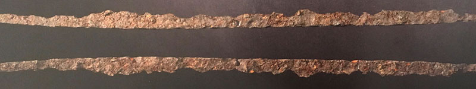
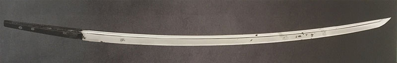
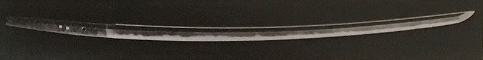
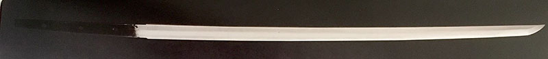
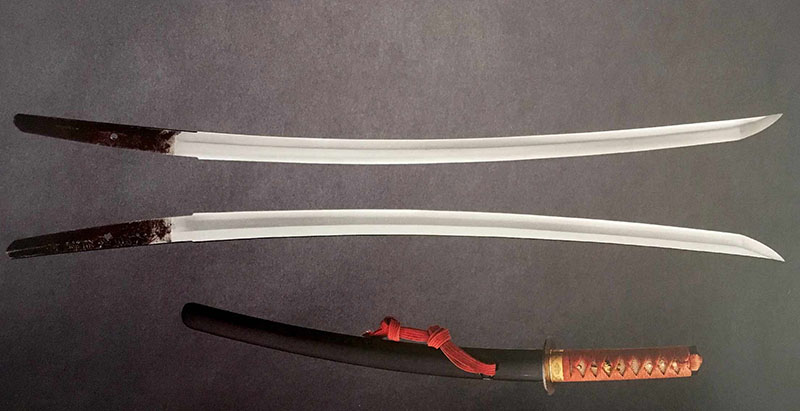
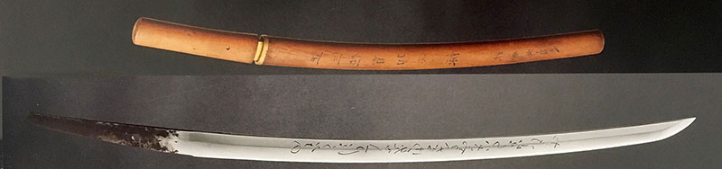
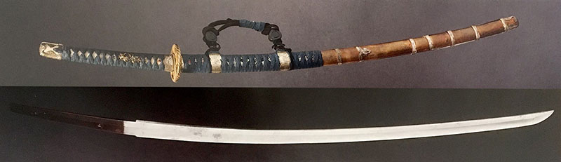
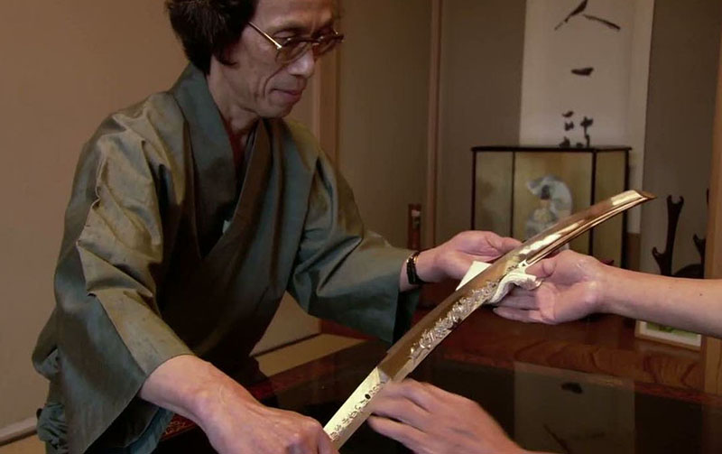

L'histoire
Dans la culture Japonaise, il y a toujours eu une grande variété de Nihonto (日本刀, « sabre japonais »), qui à l'époque étaient utilisés à des fins militaires. Aujourd'hui, ils sont surtout reconnus comme des œuvres d'art en raison de la beauté des lames et de la manière dont elles sont fabriquées.
On distingue généralement cinq grandes périodes historiques dans l'histoire des sabres japonais : les sabres Jōkotō , les sabres Koto , les sabres Shintō , les sabres Shin-Shintō , et les Gendaitō .
Sabres Jōkotō

Ces Jokoto (直刀), ou sabres très anciens, avaient un tranchant ou partiellement deux, avec une légère courbure ou sans. Le jokoto est inspiré de l'épée chinoise longue avec un pommeau en anneau, typique de la dynastie Han. Ils n’avaient que rarement une trempe sélective comme les sabres moins anciens. Les plus belles pièces montrent une qualité de forge comparable à ce qui fut réalisé plus tardivement. Ces sabres furent forgés de l'an 645 à environ 900.
Ces lames étaient pour la plupart forgées en une seule pièce, dite maru, contrairement à ce qui se fera plus tard. Peu de sabres de cette époque ont traversé le temps et sont encore en bon état, mais les plus belles conservations montrent déjà un acier de très bonne qualité, prouvant que la sélection des matériaux était importante même à l'époque.
Sabres Koto

Ces Koto (古刀), ou sabres anciens, avaient une courbure et un seul tranchant sur toute la longueur. Pendant cette ère, les lames devinrent des armes courantes portées par les samouraïs. Les forgerons commencèrent à signer (mei) leurs œuvres sur la soie (nakago). Les sabres Koto furent forgés d'environ l'an 900 à 1600, marquant une évolution notable avec des lames composites utilisant plusieurs types d'aciers.
On peut diviser cette période en trois : la fin de l'ère Heian (900-1185), marquée par de nombreuses guerres; l'ère Kamakura (1185-1333), durant laquelle les cinq traditions de forge (Gokaden) furent établies; et l'ère Muromachi (1336-1573), qui débuta par une longue période de paix favorisant l'aspect artistique des sabres.

Sabres Shintō

Les Shinto (新刀), littéralement sabres nouveaux, furent forgés d'environ 1600 à 1800. Les forgerons commencèrent à se positionner dans des zones d'influence, près des seigneurs de guerre ou des temples, pour bénéficier des routes commerciales. Cette période vit une amélioration significative des techniques de forge et de la qualité de l'acier, avec une fusion des cinq traditions de forge.

Sabres Shin-Shintō

Les Shinshinto (新新刀), ou sabres nouveaux nouveaux, furent forgés d'environ 1800 à 1867. La modernisation du pays entraîna une baisse du système féodal et du prestige des samouraïs. Les forgerons ne se limitaient plus à une seule tradition mais tentaient de les mêler, enrichissant ainsi la diversité des lames. C'est à cette époque que des lames anciennes comme les tanto et les tachi refirent surface, mais principalement pour des fins esthétiques.

Sabres Gendaitō
Les Gendaito (現代刀), ou sabres modernes, sont produits de l'an 1867 à 1945. La forge de sabres devint un art à part entière, et les sabres furent recherchés pour leur esthétique. Le port des sabres fut interdit en 1876 avec le décret Haitorei, entraînant une baisse de la demande. Toutefois, la création du titre de trésor national vivant et d'autres initiatives encouragèrent la préservation des compétences traditionnelles.
